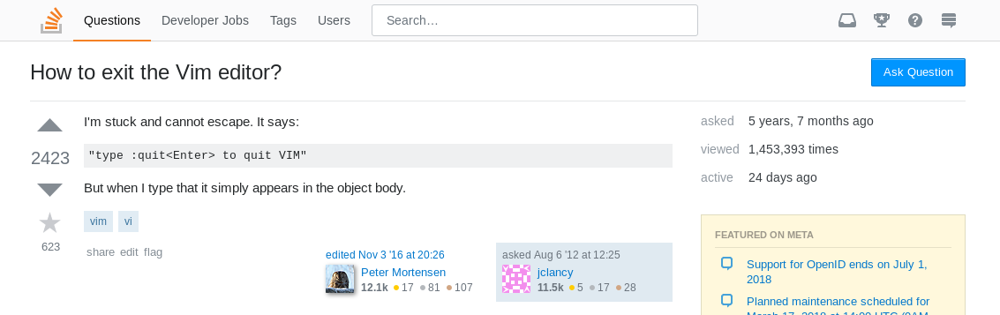
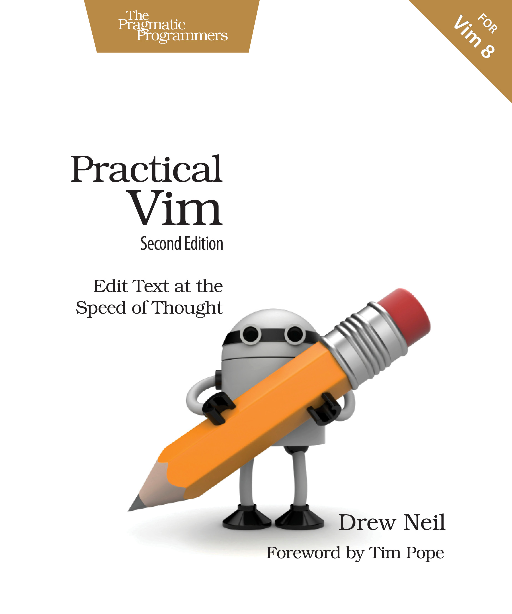

Vim
Markus Ankenbrand
devcamp Würzburg 2018

Das wichtigste zuerst
 Esc:q!
Bewegung
- h, j, k, l
- w
- b
- $
- G
- *
- t
Operator
- d
- y
- c
- p
- =
- >
Und jetzt: Action
- dw
- y$
- cb
- count
- Textobjekte
- .
Beispiele
Weitere Themen
- Visual Mode
- Search/Replace
- Ex Commands
- Autocomplete
- Macros
- Plugins
- VimGolf
Vim oder IDE
Warum nicht beides? - vim emulation
Mehr lernen

https://pragprog.com/book/dnvim2/practical-vim-second-edition